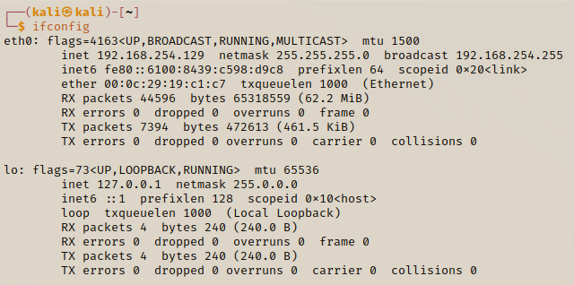

Network Commands
We will go through some of the common network commands that will be useful as a pen tester, then we will look at some of the more updated network commands,
ifconfig

Shows you the different interface types and the IP addresses asscoiated with them.
iwconfig

You will get wlan 0 or wlan 1 etc if a wireless adapter exists
ping 192.168.254.129

This continuously sends a ping to the address given.
The machine will keep pinging the address we want to communicate with. The address will send back a response to our manchine so in order to quit we would have to press ctrl+C. If we ping an address and do not get a response back, this could be because their machine might have an ICMP blocking the pings, or that the address doesn't exist.

No data is recieved because the address does not exist in my network.
arp -a

Returns a list of IP addresses it communicates with and the MAC address associated with it
netstat -ano

This shows you the active connections that are running on your machine.
This is useful in a penetration test because you can check if the machine is talking to anyone else (a different port). If the target is active on a website we can get access to the port and use that as an exploit
route

Will print out the routing table; the table tells you where the traffic exits
The route command is import because you might be ready to run you exploit on a target but didn't know the target was connected to two networks (this is possible with a dual-homed NIC). This could leave you with the possibiliyty of attacking one network, without knowing.
We will also cover what pivioting is - when you switch from network to another but you're using a machine.
Updated Network Comamnds
The ifconfig command is depricated and has been upgraded to the ip a command. It still works (for now) so you can use it, however the new command that is now becomming instrustry standard so you would be expected to know it as a pen tester. You will able to see that the new commands are also colour coded.
ip a

Just the same as ifconfig
ip n

This is the same as the arp -a command. n stands for neighbour
ip r

This is the same as the route command